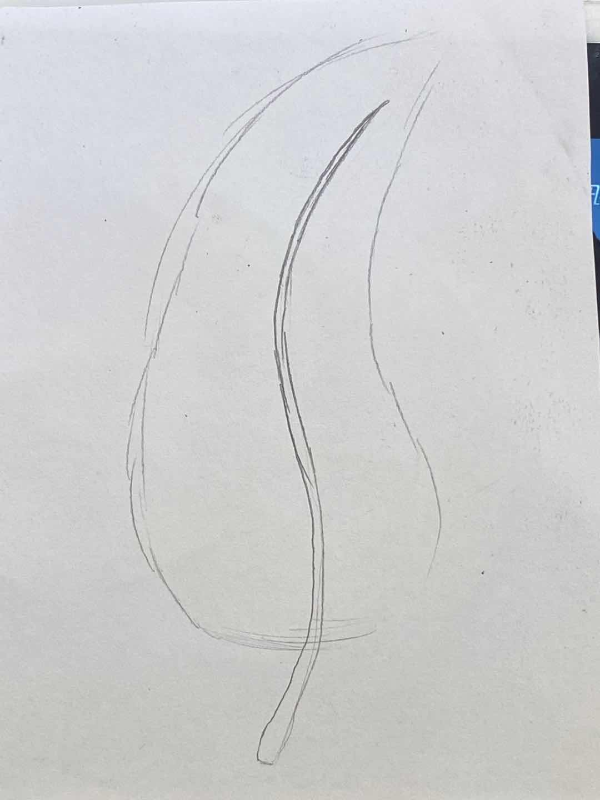
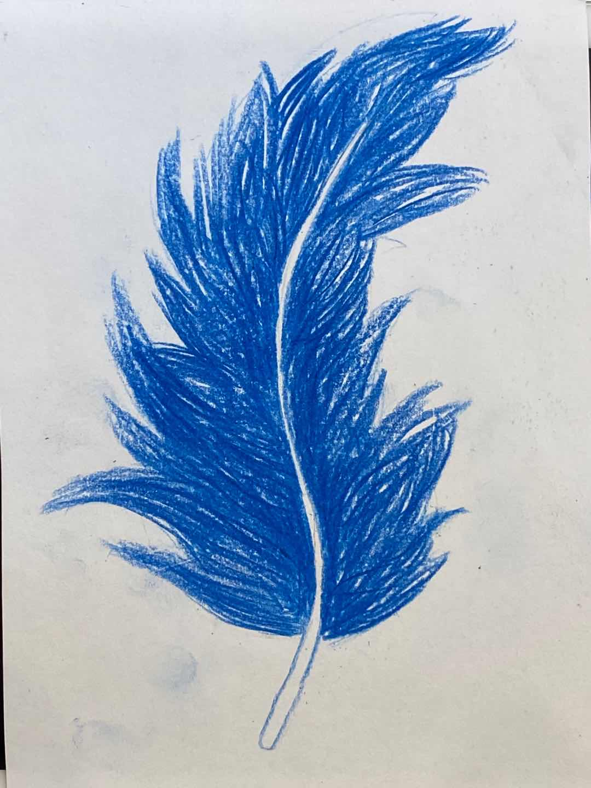
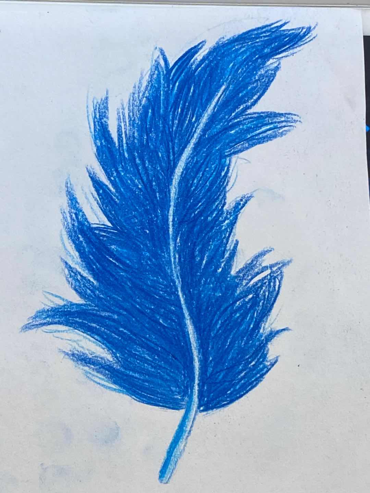
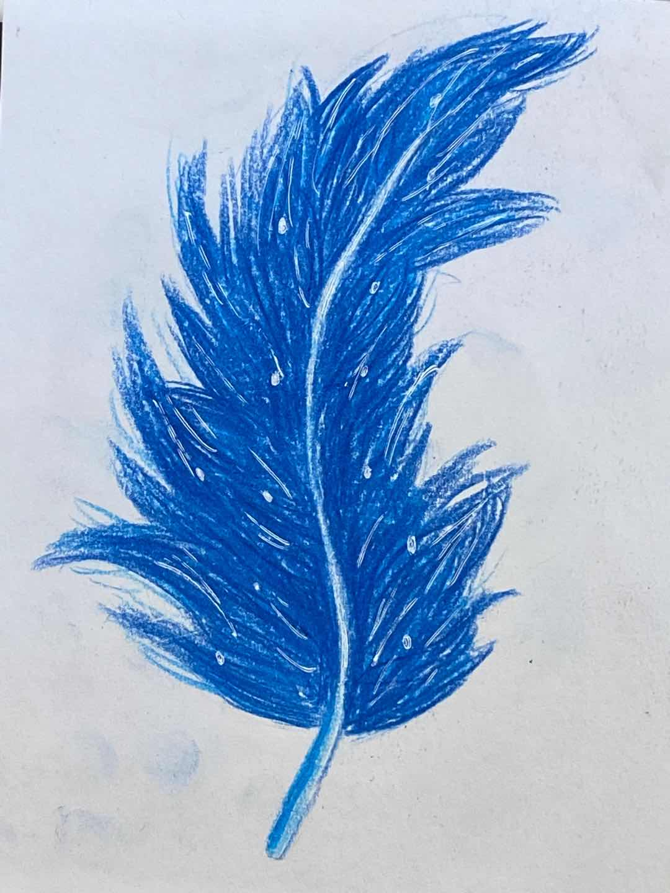

How to draw Feather

1. First daraw a preliminary sketch.

2. Draw the fluff in dark blue. (Be careful to draw one by one)

3. Fill in the white space in the middle with light blue.

4. Last, add the highlight and you are done.